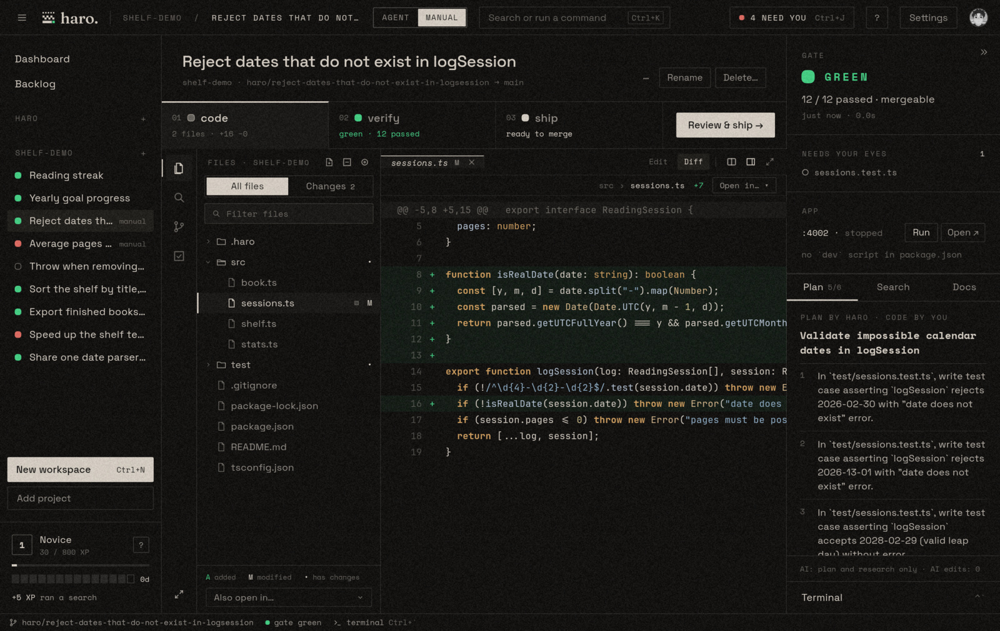
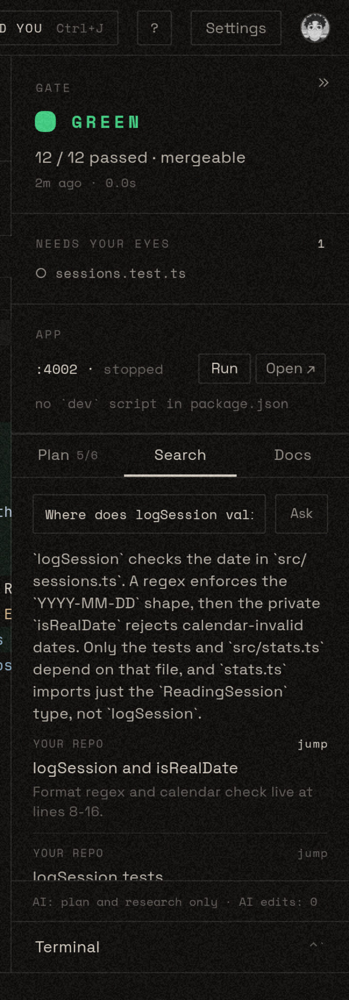
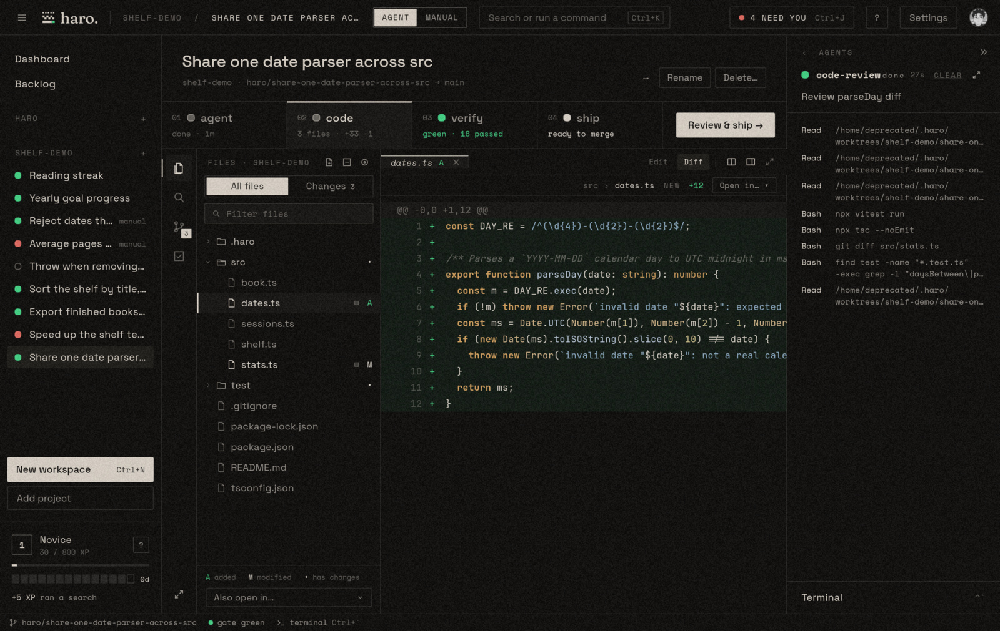
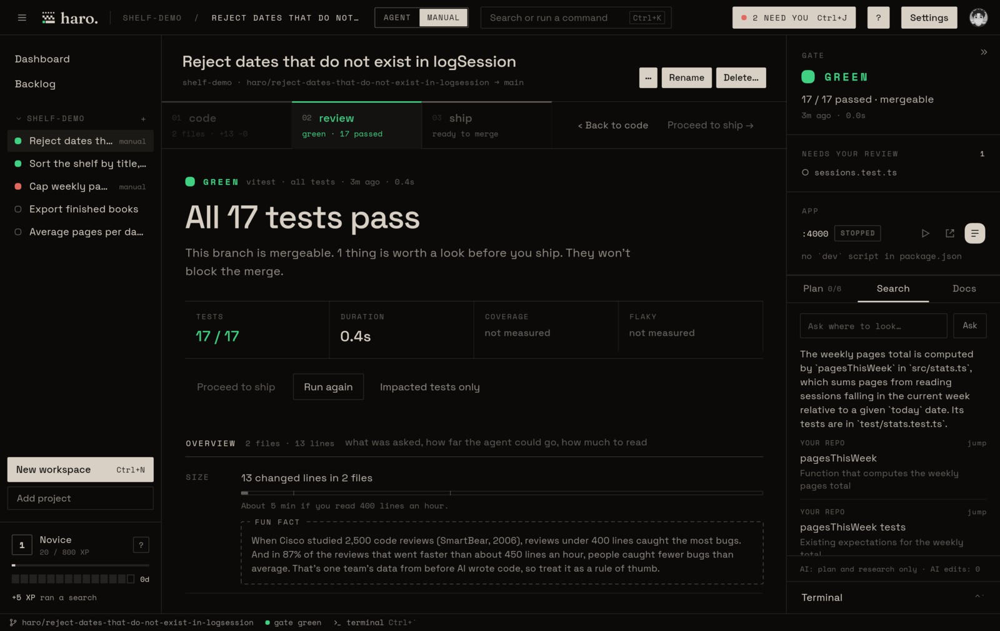
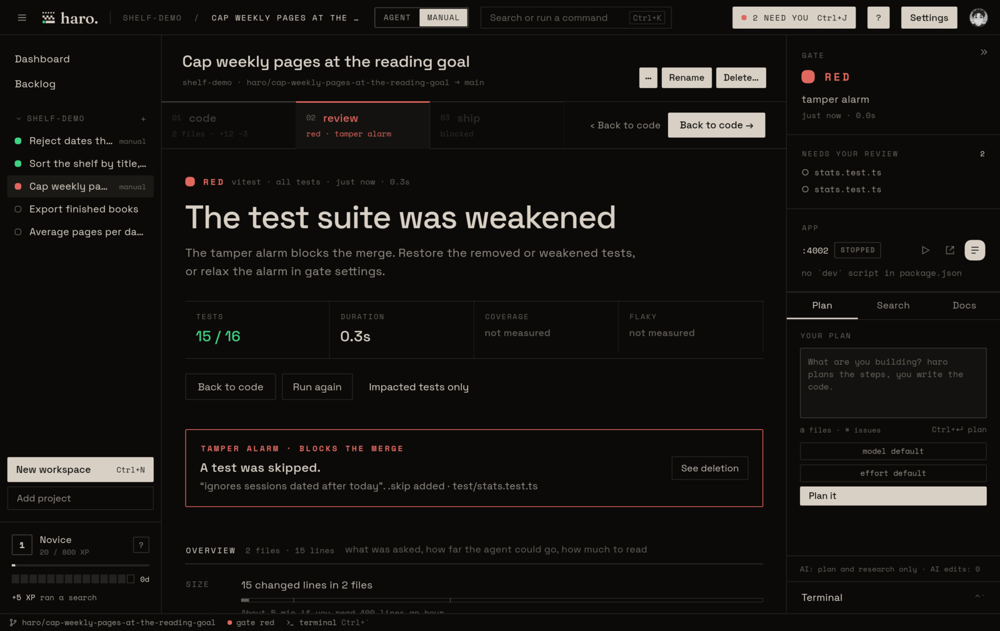
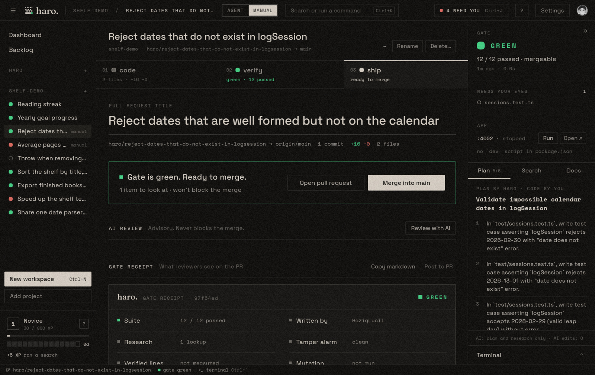
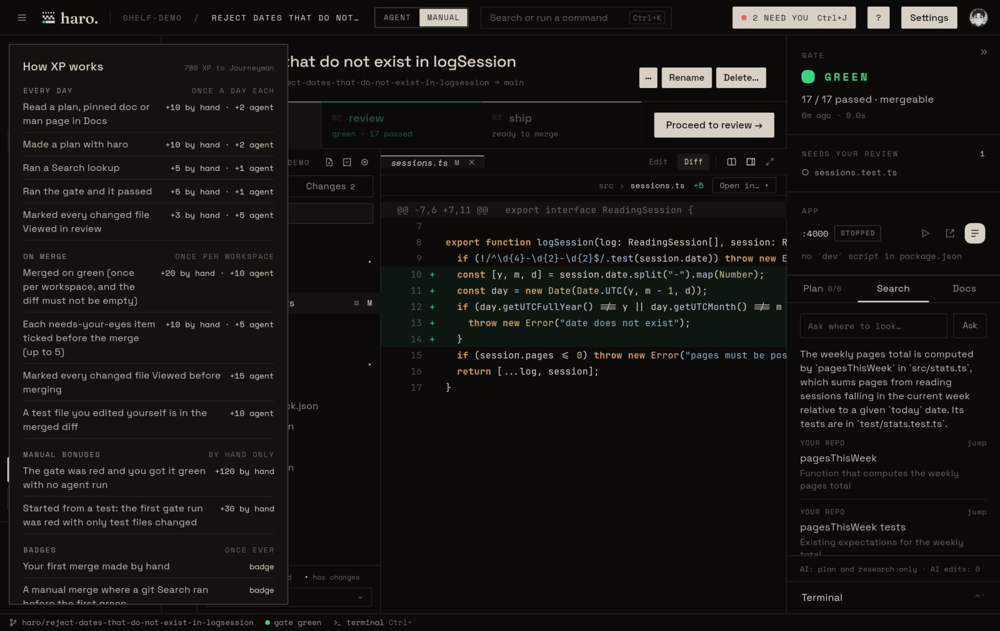
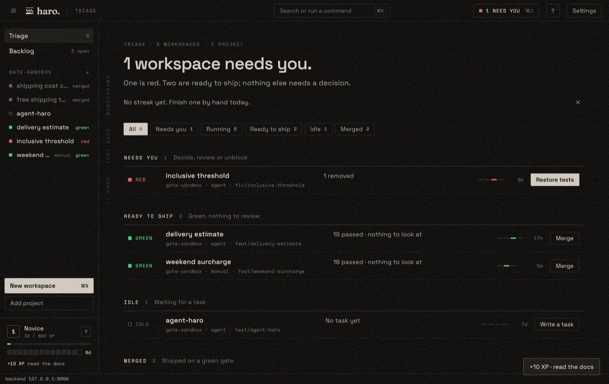
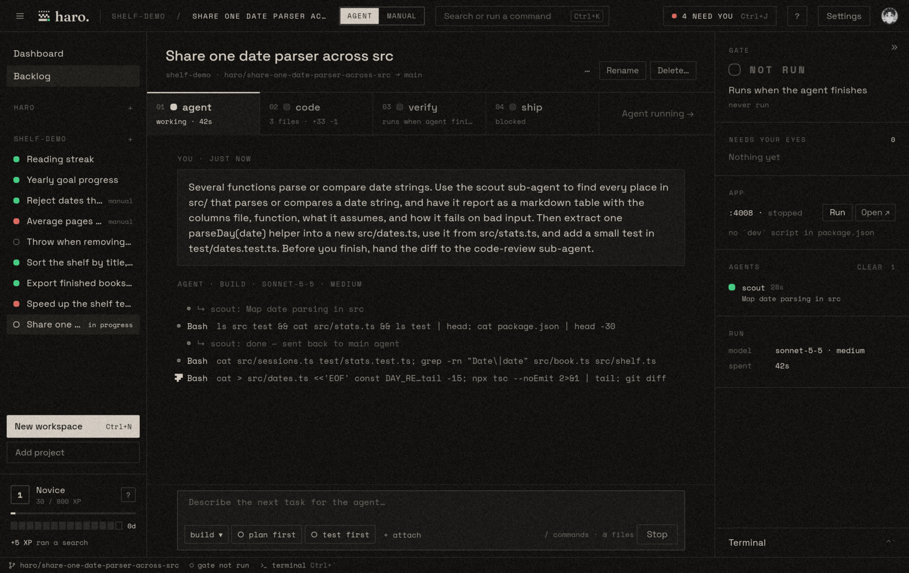
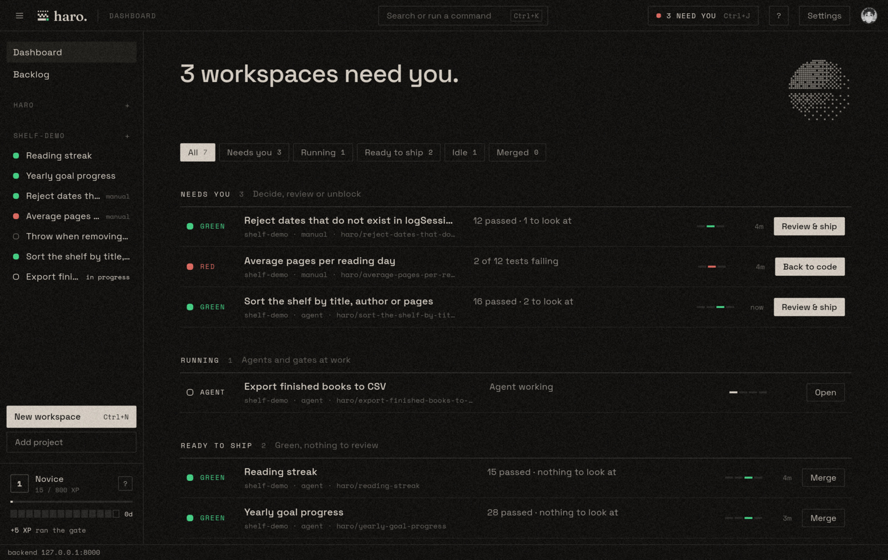

Build by hand. The agent steps aside.
Remember when you wrote the code yourself? Switch a workspace to Manual and the agent steps aside. You write it, test it and ship it. haro helps you plan, finds what you need, and keeps score.


An assistant that helps you think, not type.
In manual mode, haro’s AI can read your code and the web, but it can’t touch a single file. Ask it to plan and you get a checklist, with the reason for the order. Ask where something lives and it points you to the file, the commit or the docs. It won’t hand you code to paste. That part is yours.
haro checks your files before and after every answer, so when the receipt says “AI edits: 0”, it means it. If something else was writing at the same time, it says “unverified” instead.


Everything you need, in one window.
A file tree, search, tabs, split view and a terminal, right next to your tests. Lines your tests actually ran get a small mark in the gutter, so you can see what’s covered while you work. Turn on run on save and the gate checks your work every time you hit save.


Your test suite decides. Not an LLM.
Green means your own test suite passed, on your own machine. If a test gets deleted, skipped or quietly loosened, the tamper alarm catches it. Wondering if your tests would even notice a bug? The mutation score breaks your new code on purpose and finds out. Anything worth a second look shows up for you, without getting in your way.




A receipt that says who wrote it.
You can only merge on green. The pull request gets a receipt with the test results, the tamper check, and an honest answer to who wrote the code: you, the agent, or both of you.


Leveling up.
Levels, ranks from Novice to Master, a streak and a few badges. It's there for a little fun, a small pat on the back when your work ships.




Hand over the wheel when you just need it shipped.
Short on time? Switch the workspace to Agent and describe the task. The agent works in its own copy of your repo, and the same gate, tamper alarm and receipt apply. You can switch halfway too. haro saves your part first, so the receipt shows you both.


See what needs you, at a glance.
All your workspaces in one list, sorted by what they need: your attention, still running, ready to ship, or done. Each one shows you the next step.


09 //Local first, Linux first
Everything runs on your machine, against your own repo. The assistant uses your own Claude Code login, and pull requests go through your own gh. No GitHub app to install, and no broad permissions to hand over.
Download
AppImage
curl -LO https://github.com/HaziqLucii/haro-oss/releases/download/v0.10.3/haro-0.10.3-x86_64.AppImage && chmod +x haro-0.10.3-x86_64.AppImage && ./haro-0.10.3-x86_64.AppImage
Tarball
curl -L https://github.com/HaziqLucii/haro-oss/releases/download/v0.10.3/haro-0.10.3-linux-x86_64.tar.gz | tar xz && ./haro-0.10.3-linux-x86_64/install.sh
Build from source: github.com/HaziqLucii/haro-oss